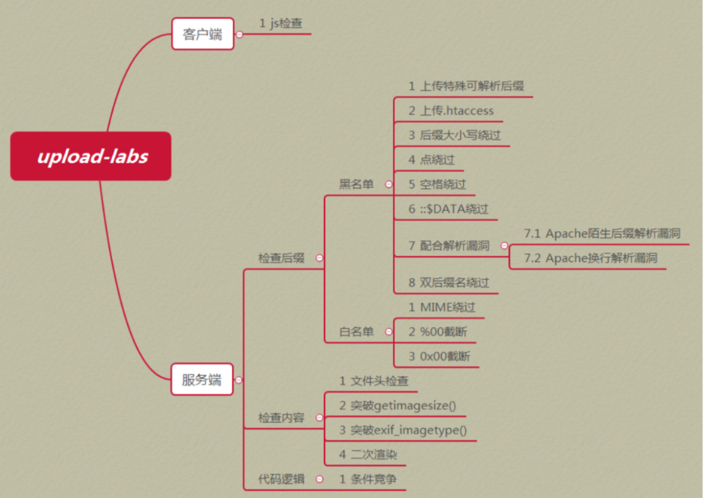

文件上传漏洞是指由于程序员未对上传的文件进行严格的验证和过滤，而导致的用户可以越过其本身权限向服务器上上传可执行的动态脚本文件。这里上传的文件可以是木马，病毒，恶意脚本或者WebShell等。这种攻击方式是最为直接和有效的，“文件上传”本身没有问题，有问题的是文件上传后，服务器怎么处理、解释文件。如果服务器的处理逻辑做的不够安全，则会导致严重的后果。

pass-01：前端js代码验证，抓不到包，可禁了js，或者审查元素找到前端函数写的地方把返回值去掉如去掉 onsubmit=”return checkFile()”或修改js加php进去
pass-02：文件类型验证，可以将Content-Type: application/octet-stream改为Content-Type: image/jpeg
pass-03：黑名单验证 asp|.aspx|.php|.jsp，可上传.htaccess 内容”AddType application/x-httpd-php .jpg” 或者 SetHandler application/x-httpd-php，a.php. . (点+空格+点)
pass-04：黑名单验证”.php”,”.php5”,”.php4”,”.php3”,”.php2”,”php1”,”.html”,”.htm”,”.phtml”,”.pHp”,”.pHp5”,”.pHp4”,”.pHp3”,”.pHp2”,”pHp1”,”.Html”,”.Htm”,”.pHtml”,”.jsp”,”.jspa”,”.jspx”,”.jsw”,”.jsv”,”.jspf”,”.jtml”,”.jSp”,”.jSpx”,”.jSpa”,”.jSw”,”.jSv”,”.jSpf”,”.jHtml”,”.asp”,”.aspx”,”.asa”,”.asax”,”.ascx”,”.ashx”,”.asmx”,”.cer”,”.aSp”,”.aSpx”,”.aSa”,”.aSax”,”.aScx”,”.aShx”,”.aSmx”,”.cEr”,”.sWf”,”.swf” 可上传.htaccess 内容”AddType application/x-httpd-php .jpg” 或者 SetHandler application/x-httpd-php，a.php. . (点+空格+点)
pass-05：黑名单验证，后台函数没有将后缀名转换大小写，可以大小写绕过，如a.PHP，a.php. . (点+空格+点)
pass-06：黑名单验证，后台函数没有对后缀名去空处理$file_ext = trim($file_ext);可上传a.php 或直接上传a.php. . (点+空格+点)，windows默认去掉空格，点
pass-07：黑名单验证，后台函数没有对后缀名去点处理$file_name = deldot($file_name);可上传a.php.或直接上传a.php. . (点+空格+点)， windows默认去掉空格，点
pass-08：黑名单验证，后台函数没有对 Windows文件流特性限制$file_ext = str_ireplace(‘::$DATA’, ‘’, $file_ext);，可上传a.php::data
pass-09： a.php. . (点+空格+点)
pass-10：黑名单验证， $file_name = str_ireplace($deny_ext,””, $file_name); 后台函数将$file_name中$deny_ext替换为空，可以双写上传如b.pphphp
pass-11：白名单验证， $img_path = $_GET[‘save_path’].”/“.rand(10, 99).date(“YmdHis”).”.”.$file_ext;上传路径可控可用%00截断，找到save_path在路径后加a.php%00
pass-12：白名单验证，$img_path = $_POST[‘save_path’].”/“.rand(10, 99).date(“YmdHis”).”.”.$file_ext;上传路径可控可用%00截断，找到save_path在路径后加a.php%00，注意POST的数据%00要从hex值里面改为00， 因为POST不会像GET对%00进行自动解码
pass-13：copy 1.jpg/b+2.php/a 1.jpg，文件包含解析b表示二进制，a表示ascii码
pass-14：getimagesize获取文件类型，还是直接就可以利用图片马就可进行绕过
pass-15：php_exif模块来判断文件类型，还是直接就可以利用图片马就可进行绕过
pass-16：二次渲染，gif上传下载找到没有被渲染的部分，添加代码
pass-17：条件竞争，burpsuite一直发包在上传的php未被删除之前，访问
pass-18：条件竞争，上传图片马burpsuite一直发包在上传的图片马未被删除之前，访问
pass-19：路径可控%00截断